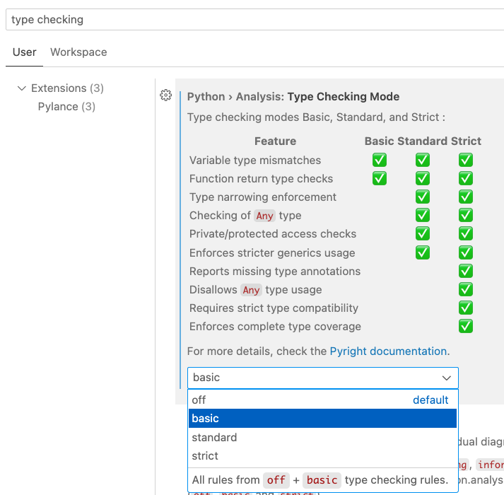

实验 3：序列、递归
起始文件
下载 lab03.zip。
主题
如果你需要复习本次实验课的内容，可以查阅本节。你也可以直接跳到 the questions，遇到困难时再回到这里查阅。
列表
列表是一种数据结构，可以保存有序的元素集合。这些元素称为元素项，可以是任意数据类型，包括数字、字符串，甚至其他列表。用方括号括起、以逗号分隔的表达式列表可以创建一个列表：
>>> list_of_values = [2, 1, 3, True, 3]
>>> nested_list = [2, [1, 3], [True, [3]]]列表中的每个位置都有一个索引，最左边的元素索引为 0。
>>> list_of_values[0]
2
>>> nested_list[1]
[1, 3]负索引从末尾开始计数，最右边的元素索引为 -1。
>>> nested_list[-1]
[True, [3]]列表相加会生成一个更长的列表，其中包含被相加的各个列表的元素。
>>> [1, 2] + [3] + [4, 5]
[1, 2, 3, 4, 5]列表推导式
列表推导式描述一个列表中的元素，求值后得到一个包含这些元素的新列表。
它有两种形式：
[<expression> for <element> in <sequence>]
[<expression> for <element> in <sequence> if <conditional>]下面这个例子从 [1, 2, 3, 4] 开始，用 if i % 2 == 0 挑出偶数元素 2 和 4，再用 i*i 分别把它们平方。for i 的作用是给 [1, 2, 3, 4] 中的每个元素起一个名字。
>>> [i*i for i in [1, 2, 3, 4] if i % 2 == 0]
[4, 16]这个列表推导式求值后得到的是一个列表，其中包含：
i*i的值- 对应序列
[1, 2, 3, 4]中的每个元素i - 且满足
i % 2 == 0
换句话说，这个列表推导式会创建一个新列表，其中包含原列表 [1, 2, 3, 4] 中每个偶数元素的平方。
我们也可以把列表推导式改写成等价的 for 语句，例如上面的例子可以改写成：
>>> result = []
>>> for i in [1, 2, 3, 4]:
... if i % 2 == 0:
... result = result + [i*i]
>>> result
[4, 16]for 语句
for 语句会为序列（例如列表或 range）中的每个元素执行代码。每次执行时，for 后面的名字都会绑定到序列中不同的元素。
for <name> in <expression>:
<suite>首先，对 <expression> 求值，它必须求值出一个序列。然后，按顺序对序列中的每个元素：
- 把
<name>绑定到该元素。 - 执行
<suite>。
下面是一个例子：
for x in [-1, 4, 2, 0, 5]:
print("Current elem:", x)这段代码会输出以下内容：
Current elem: -1
Current elem: 4
Current elem: 2
Current elem: 0
Current elem: 5range
range 是一种用于存放整数序列的数据结构。可以通过以下方式创建 range：
range(stop)包含 0, 1, ...,stop- 1range(start, stop)包含start,start+ 1, ...,stop- 1
注意 range 函数不包含 stop 值；它生成的数字一直取到 stop 为止，但不包括 stop 本身。
例如：
>>> for i in range(3):
... print(i)
...
0
1
2虽然 range 和列表都属于sequences，但 range 对象与列表并不相同。调用 list() 可以把 range 转换成列表：
>>> range(3, 6)
range(3, 6) # this is a range object
>>> list(range(3, 6))
[3, 4, 5] # list() converts the range object to a list
>>> list(range(5))
[0, 1, 2, 3, 4]
>>> list(range(1, 6))
[1, 2, 3, 4, 5]类型检查
声明：尽管类型检查很有用，但请更多把它当作一种判断输入和输出的练习。在本课程的一些情形中，类型检查的语法会超出范围。不过，请阅读关于类型检查的内容，并在可能时加以应用。
类型提示可以出现在赋值语句和 def 语句中（以及少数其他位置），用来表明变量应具有的值类型，或函数应返回的值类型。
一个没有类型提示的例子：
x = 4
def pair(y, z):
return [y, z]同一个例子加上类型提示，表明 x、y 和 z 都是整数，并且 pair 函数返回一个整数列表：
x: int = 4
def pair(y: int, z: int) -> list[int]:
return [y, z]无论有没有类型提示，代码的行为都完全相同。你可以在类型标注这篇文章中了解更多。
自动类型检查：VS Code 可以配置为在某个变量被赋了不符合预期类型的值时加以标注。要启用类型检查，请打开 VS Code 设置：在 Mac 上按 Command 和 , 键，在 Windows 上同时按 Control 和 , 键。在搜索栏中输入 type checking，就会出现下图中所示的 Type Checking 选项。使用下拉菜单把类型检查从默认的 off 改为 basic。

如果这些类型检查选项没有出现，你可能需要安装 Pylance 扩展。按住 Mac 上的 Shift、Command 和 X，或 Windows 上的 Shift、Control 和 X，打开扩展视图。在搜索栏中输入 Pylance，然后按下安装按钮。
要确认类型检查是否已启用，请在 Python 文件中输入以下内容：
a: int = 'not an int'你应该会看到 'not an int' 下方出现红色下划线。如果把鼠标悬停在 'not an int' 上，VS Code 会显示一条错误信息，说明 'not an int' 与预期的类型 int 不匹配。写代码时请留意这些错误！它们通常是在提示你的代码哪里有 bug。
必做题
列表
Q1：WWPD：列表与 range
用 ok 回答下面的「Python 会输出什么？」（WWPD）题目：
python3 ok -q lists-wwpd -u
重要：对于所有「Python 会输出什么？」题目，如果你认为答案是
<function...>，请输入Function；如果会报错，请输入Error；如果什么也不显示，请输入Nothing。
先预测在交互式解释器中输入下面内容会输出什么，然后实际运行一次来核对答案。
>>> s = [7//3, 5, [4, 0, 1], 2]
>>> s[0]
______2
>>> s[2]
______[4, 0, 1]
>>> s[-1]
______2
>>> len(s)
______4
>>> 4 in s
______False
>>> 4 in s[2]
______True
>>> s[2] + [3 + 2]
______[4, 0, 1, 5]
>>> 5 in s[2]
______False
>>> s[2] * 2
______[4, 0, 1, 4, 0, 1]
>>> list(range(3, 6))
______[3, 4, 5]
>>> range(3, 6)
______range(3, 6)
>>> r = range(3, 6)
>>> [r[0], r[2]]
______[3, 5]
>>> range(4)[-1]
______3Q2：展平
编写一个函数 flatten，它接收一个列表 s，并返回一个新的列表，即 s 的“展平”版本。你不应修改原来的列表。
注意：输入的列表可能嵌套很深，也就是说列表里可能还有多层列表。请确保你的解法支持这种情况。
提示：你可以使用内置的
type函数来判断某个东西是不是列表。例如：>>> type(3) == list False >>> type([1, 2, 3]) == list True
def flatten(s: list) -> list:
"""Returns a flattened version of list s.
>>> flatten([1, 2, 3])
[1, 2, 3]
>>> deep = [1, [[2], 3], 4, [5, 6]]
>>> flatten(deep)
[1, 2, 3, 4, 5, 6]
>>> deep # input list is unchanged
[1, [[2], 3], 4, [5, 6]]
>>> very_deep = [['m', ['i', ['n', ['m', 'e', ['w', 't', ['a'], 't', 'i', 'o'], 'n']], 's']]]
>>> flatten(very_deep)
['m', 'i', 'n', 'm', 'e', 'w', 't', 'a', 't', 'i', 'o', 'n', 's']
"""
"*** YOUR CODE HERE ***"
用 ok 测试你的代码：
python3 ok -q flatten列表推导式
Q3：WWPD：列表推导式
用 ok 回答下面的「Python 会输出什么？」（WWPD）题目：
python3 ok -q list-comprehensions-wwpd -u
重要：对于所有「Python 会输出什么？」题目，如果你认为答案是
<function...>，请输入Function；如果会报错，请输入Error；如果什么也不显示，请输入Nothing。
先预测在交互式解释器中输入下面内容会输出什么，然后实际运行一次来核对答案。
>>> [2 * x for x in range(4)]
______[0, 2, 4, 6]
>>> [y for y in [6, 1, 6, 1] if y > 2]
______[6, 6]
>>> [[1] + s for s in [[4], [5, 6]]]
______[[1, 4], [1, 5, 6]]
>>> [z + 1 for z in range(10) if z % 3 == 0]
______[1, 4, 7, 10]Q4：相近列表
实现 close_list，它接收一个整数列表 s 和一个非负整数 k，返回一个列表，其中包含 s 中与其索引相差不超过 k 的元素。也就是说，元素与其索引之差的绝对值小于或等于 k。
def close_list(s: list[int], k: int) -> list[int]:
"""Return a list of the elements of s that are within k of their index.
>>> t = [6, 2, 4, 3, 5]
>>> close_list(t, 0) # Only 3 is equal to its index
[3]
>>> close_list(t, 1) # 2, 3, and 5 are within 1 of their index
[2, 3, 5]
>>> close_list(t, 2) # 2, 3, 4, and 5 are all within 2 of their index
[2, 4, 3, 5]
"""
assert k >= 0
return [___ for i in range(len(s)) if ___]
用 ok 测试你的代码：
python3 ok -q close_list递归
Q5：列表排序
排序是计算机科学中一个非常重要的主题。本题中我们用递归来试着对一个列表排序。
首先，编写一个函数 remove_first，它接收一个列表 lst，并移除数字 elem 第一次出现的那一项。
def remove_first(lst: list, elem: int) -> list:
""" This function removes the first appearance of elem in list lst.
>>> remove_first([3, 4] , 3)
[4]
>>> remove_first([3, 4, 3] , 3)
[4, 3]
>>> remove_first([2, 4] , 3)
[2, 4]
>>> remove_first([] , 0)
[]
"""
"*** YOUR CODE HERE ***"
用 ok 测试你的代码：
python3 ok -q remove_first接下来，编写一个函数 sort，它接收一个列表 lst 并返回该列表排序后的版本。请使用递归！
提示：使用你刚刚定义的
remove_first函数，以及内置的min函数。
def sort(lst: list) -> list:
"""This function returns a sorted version of the list lst.
>>> sort([6, 2, 5])
[2, 5, 6]
>>> sort([2, 3])
[2, 3]
>>> sort([3])
[3]
>>> sort([])
[]
"""
"*** YOUR CODE HERE ***"
用 ok 测试你的代码：
python3 ok -q sortQ6：制作洋葱
编写一个函数 make_onion，它接收两个单参数函数 f 和 g。它返回一个函数，该函数接收三个参数：x、y 和 limit。如果可以在最多 limit 次对 f 和 g 的调用内从 x 到达 y，返回的函数就返回 True，否则返回 False。
例如，如果 f 是加 1、g 是乘 2，那么可以在四次调用内从 5 到达 25：f(g(g(f(5))))。
def make_onion(f, g):
"""Return a function can_reach(x, y, limit) that returns
whether some call expression containing only f, g, and x with
up to limit calls will give the result y.
>>> up = lambda x: x + 1
>>> double = lambda y: y * 2
>>> can_reach = make_onion(up, double)
>>> can_reach(5, 25, 4) # 25 = up(double(double(up(5))))
True
>>> can_reach(5, 25, 3) # Not possible
False
>>> can_reach(1, 1, 0) # 1 = 1
True
>>> add_ing = lambda x: x + "ing"
>>> add_end = lambda y: y + "end"
>>> can_reach_string = make_onion(add_ing, add_end)
>>> can_reach_string("cry", "crying", 1) # "crying" = add_ing("cry")
True
>>> can_reach_string("un", "unending", 3) # "unending" = add_ing(add_end("un"))
True
>>> can_reach_string("peach", "folding", 4) # Not possible
False
"""
def can_reach(x, y, limit: int) -> bool:
if limit < 0:
return ____
elif x == y:
return ____
else:
return can_reach(____, ____, limit - 1) or can_reach(____, ____, limit - 1)
return can_reach用 ok 测试你的代码：
python3 ok -q make_onion本地查看得分
你可以在本地查看本次作业每道题的得分，运行：
python3 ok --score选做题
这些是选做题。即使不做，本次作业仍然可以拿到全部学分。不过它们是不错的练习，建议还是做一下！
Q7：函数重复器
定义一个函数 make_fn_repeater，它接收一个单参数函数 f 和一个整数 x。它应返回另一个函数，该函数接收一个参数，也就是另一个整数。这个函数返回把 f 应用到 x 上指定次数后的结果。
请确保在解法中使用递归。
def make_func_repeater(f, x: int):
"""
>>> increment_repeater = make_func_repeater(lambda x: x + 1, 1)
>>> increment_repeater(2) #same as f(f(x))
3
>>> increment_repeater(5)
6
"""
def repeat(____):
if ____:
return ____
else:
return ____
return ____
用 ok 测试你的代码：
python3 ok -q make_func_repeaterQ8：十数对
编写一个函数，它接收一个正整数 n，并返回其中包含的十数对的个数。十数对是 n 中两个数字组成的一对，它们的和为 10。
数字 7,823,952 有 3 个十数对。第一位和第四位数字之和为 7+3=10，第二位和第三位数字之和为 8+2=10，第二位和最后一位数字之和为 8+2=10。
重要说明：
- 一个数字可以属于多个十数对。
- 一个 5 不能和它自己组成十数对。
建议：完成并使用辅助函数
count_digit来计算某个数字在n中出现了多少次。
重要：请使用递归；如果使用任何循环（for、while），测试将无法通过。
def ten_pairs(n: int) -> int:
"""Return the number of ten-pairs within positive integer n.
>>> ten_pairs(7823952) # 7+3, 8+2, and 8+2
3
>>> ten_pairs(55055)
6
>>> ten_pairs(9641469) # 9+1, 6+4, 6+4, 4+6, 1+9, 4+6
6
>>> # ban iteration
>>> from construct_check import check
>>> check(SOURCE_FILE, 'ten_pairs', ['While', 'For'])
True
"""
"*** YOUR CODE HERE ***"
def count_digit(n: int, digit: int) -> int:
"""Return how many times digit appears in n.
>>> count_digit(55055, 5) # digit 5 appears 4 times in 55055
4
>>> from construct_check import check
>>> # ban iteration
>>> check(SOURCE_FILE, 'count_digits', ['While', 'For'])
True
"""
"*** YOUR CODE HERE ***"
用 ok 测试你的代码：
python3 ok -q ten_pairs